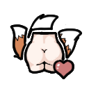
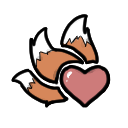

好生养Kurin_Fertile

Kurin/Gene/Kurin_Fertile
—
这种基因的携带者的受孕力和受青睐感都相当优秀，是优秀的天生伴侣。在一段亲密的时光结束后，她们带来的温暖与满足感仍会久久留存。
本片：好生养 Kurin_ 魅狐 闪耀世界魅力 闪耀世界耐力 闪耀世界超感 不耐劳作 魅狐
Kurin_Fertile
Kurin/Gene/Kurin_Fertile
—
这种基因的携带者的受孕力和受青睐感都相当优秀，是优秀的天生伴侣。在一段亲密的时光结束后，她们带来的温暖与满足感仍会久久留存。
Kurin_FertileMemory
—
（无描述）
Kurin_GeneCategory
—
（无描述）
Kurin_GlitterWorldCharm
Kurin/Gene/Kurin_GlitterWorldCharm
—
这种基因的携带者总是散发着十分独特的魅力，其个性令人难忘，却不会因为过于特殊而显得单调。
Kurin_GlitterWorldEnduranceKurin/Gene/Kurin_GlitterWorldEndurance
—
这种基因的携带者的耐力相比人类接近于完美，其极少感到疲惫且总能保持充沛的活力，不过作为代价，身体所需对的营养代谢率会极大提高。
Kurin_GlitterworldHypersenseKurin/Gene/Kurin_GlitterworldHypersense
—
这种基因的携带者拥有经过基因工程改造的超敏神经系统，以便更好的察觉他人情绪、动作与思维的细微变化，通常会因此拥有出色的社交能力。但代价是疼痛耐受力较低，也更容易受到精神压力影响。
Kurin_UnsuitedForLaborKurin/Gene/Kurin_UnsuitedForLabor
—
这种基因的携带者的身体结构不擅长于长时间的体力劳动，她们依然能够学习建造、采矿与种植等技能，甚至成为其中的专家，但进行体力劳动的效率明显低于正常人。
KurinXenotypeKurin/Gene/Kurin_Xenotype
—
魅狐是一种诞生于闪耀世界奥罗拉的类人物种。 她们最初被作为定制伴侣制造，但在奥罗拉战争后被迫离开故乡，如今散落于边缘世界各处。 她们最显著的特征便是身后的三条狐狸尾巴。